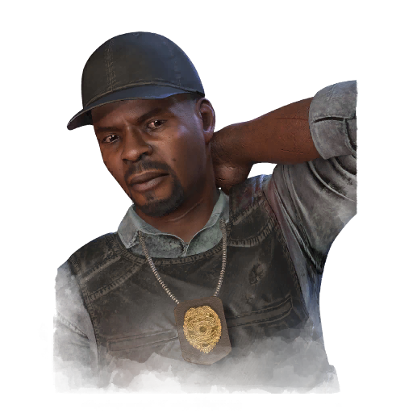

侦探戴维·塔普 Detective David Tapp
- 性别
- Man
- 出身
- African American
- 演员
- Dave Blake (BHVR)
背景故事
探长戴维·泰普曾经是个好人。让他决心将杀手绳之以法、为受害者复仇的信念，支撑起了一段漫长而备受尊敬的职业生涯。当他第一次看到"锯子"案的细节时，它看起来和许多案子没什么两样。确实更加血腥骇人，但也只不过是又一个偏爱夸张做派的疯子，很快就会锒铛入狱。一时灵光一闪，泰普与搭档斯蒂芬·辛警探一同前往一座废弃的假人模特工厂，在那里发现了锯子的老巢。他们抓住了这个人，但在其身份暴露之前，他成功逃脱，并在逃离时割开了泰普的喉咙。辛抛下搭档独自追了上去，却落入了陷阱暗算。泰普在这唯一一次没有按章办事——未持搜查令便进入了那处老巢——而付出的代价，是一名警探的死亡。他被警局开除，带着残破的喉咙和令人窒息的愧疚离开。他将那份愧疚转化为一种执念：他要找到那个杀手，阻止 murders，证明自己，并为自己的朋友与同僚复仇。循着证据的线索，他找到了劳伦斯·戈登医生，并在这位医生的公寓外蹲守监视，确信自己一定能找到他罪行的证据。随后，他看见一个陌生人出现在戈登的窗前，并听到了枪声。泰普冲上去质问，那人转身逃窜，追捕一路延续到一栋工业建筑前。岁月终于追上了他——一场他年轻时能轻松取胜的搏斗，最终以泰普身中一弹告终。
专属技能
通用技能 任意逃生者均可使用
寻宝专家
Artefact Hunter
执念之缚
Bound by Obsession
黑暗感知
Dark Sense
坚持到底
Down to the Last
似曾相识
Déjà Vu
希望
Hope
同族
Kindred
最后站立
Last Standing
轻装上阵
Lightweight
不抛弃任何人
No One Left Behind
过度自信
Overconfidence
掠夺者直觉
Plunderer's Instinct
预兆
Premonition
韧性
Resilience
滑溜之躯
Slippery Meat
小猎手
Small Game
背脊发凉
Spine Chill
这不是真的
This Is Not Happening
硬跑者
Tough Runner
我们能行
We'll Make It
求生意志
Will to Live
附加品
- 暂无数据。